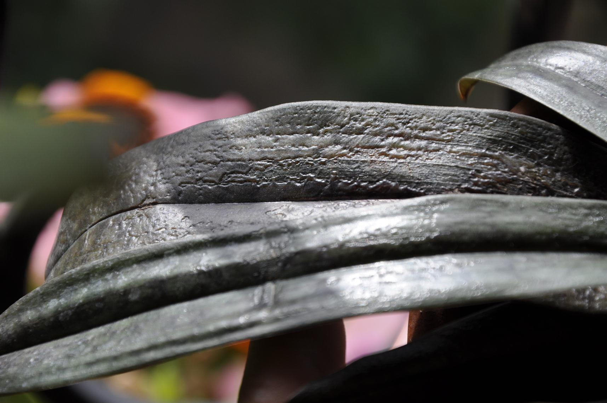
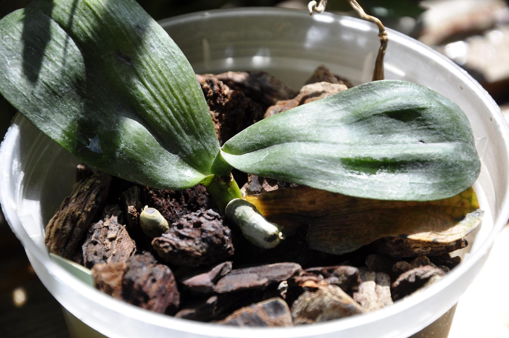

<div class="container">
    <div class="pests">
        <h1>Хвороби орхідей</h1>
        <div class="text">
            На сьогоднішній день придбати орхідею - не проблема, проблема - знайти грамотну інформацію про подальше її утримання в домашній культурі. Основним і практично для всіх доступним «джерелом знань» є інтернет. Зареєструвавшись на першому квітковому форумі, ми читаємо відгуки і поради таких же дилетантів, як і ми самі, і визначити, чия порада правильна, а чия - ні, ми зможемо тільки з часом на власних помилках. Як правило, хвороби орхідей виникають через неправильний догляд і сигналізує нам про це в першу чергу листя рослин.
            Розглянемо деякі захворювання орхідей і помилки з причини неправильного догляду.
            <h6>1.Захворювання орхідей через неправильне освітлення. Опіки.</h6>
            Напевно, найголовнішу роль у вирощуванні кімнатних квітів у квартирі відіграє освітлення. Хвороби орхідей дуже часто виникають саме через неправильно підібране освітлення. Орхідеї діляться на дві групи: тіньовитривалі та світлолюбні.
            Перша наша помилка в тому, що при покупці орхідеї ми не замислюємося, до якої групи належить вподобана нами рослина і чи зможемо ми в домашніх умовах забезпечити їй належне освітлення. До світлолюбних орхідей відносяться Ванди, Каттлеї, Лелії, Цимбідіуми, Ангрекум і багато інших, а також всі гібриди на основі перерахованих видів. У світлолюбних орхідей через нестачу світла дрібнішає нове листя, розвиваються слабкі деформовані паростки, які не сформують повноцінну, здорову бульбу і надалі відповідно не порадують своїм цвітінням. Фаленопсиси і Камбрії, навпаки, можна вирощувати на північних і північно-східних вікнах.
            Більш того, у орхідей, які мають ряболисті форми, з часом окрас блякне, і як би ви її не підживлювали і не поливали, рано чи пізно орхідея втратить здоровий зовнішній вигляд і незабаром загине. Через нестачу освітлення рослини стають більш вразливими та легше піддаються захворюванням.
            В свою чергу хочу звернути Вашу увагу, що світлолюбна рослина - це не означає, що вона здатна перенести прямі сонячні промені. До весняного сонця потрібно починати привчати орхідею поступово. У березні на південних, південно-східних вікнах в першій половині дня орхідеї потрібно притіняти, інакше після зимових хмарних днів рослини, які не звикли до яскравого сонця, отримають сильні опіки. З часом рослина адаптується до більш яскравого сонця і не потребуватиме додаткового притінення, достатньо буде опускати фіранку тільки опівдні.
            <div class="image1">
                
            </div>
            <span> Фото 1. Наслідок опіку. Навіть у такої сонцелюбивої рослини як Ванда, можуть з’явитися опіки, якщо рослина не звикла перебувати на полудневому сонці.</span>
            <div class="image1">
                
            </div>
            <span>Фото 2. Загальна картина опіків на орхідеї Ванда.</span>
            <p>Як ми вже обговорювали вище, без достатньої кількості світла рослини не можуть нормально розвиватися, тому більшість квітникарів встановлюють в приміщенні, де знаходяться орхідеї, додаткове штучне освітлення. Якщо неправильно підібрати висоту між лампою і рослиною (як мінімум від останнього зростаючого листа висота повинна становити 20-30 см), то буквально на наступний день орхідеї отримають термічні опіки. Крім того, лампи випромінюють тепло, яке особливо в жарку пору року негативно позначається на розвитку орхідей. Термічні опіки надалі підсохнуть і особливо не зашкодять рослині, але плями від опіків так і залишаться. Тому для таких цілей потрібно вибирати лампи нового покоління і витримувати висоту розміщення ламп.</p>
            <div class="image1">
                
            </div>
            <span>Фото 3. Термічний опік (від дотику люмінесцентної лампи).</span>
            <p>Не варто опік плутати із засмагою, засмага не завдасть рослині шкоди, але це сигнал того, що рослину слід притіниті, слідом за засмагою може виникнути й опік.</p>
            <div class="image1">
                
            </div>
            <span>Фото 4. Засмага на Бульбі Каттлеї.</span>
            <p>Орхідеї не обприскують на сонці, крапельки води можуть спрацювати як лінза і рослина отримає опіки.</p>
            <div class="image1">
                
            </div>
            <span>Фото 5. Опіки на квітах Фаленопсиса.</span>
            <h6>2.Основні помилки при поливі та подальші захворювання.</h6>
            Кожен рід і вид орхідей вимагає особливих правил поливу. Але хочу звернути Вашу увагу, що в кожній квартирі свій мікроклімат, тому дати однозначну пораду з якою послідовністю поливати ніхто не зможе. Потрібно в своїх умовах знайти золоту середину і спробувати зрозуміти рослину: коли її потрібно полити, а коли від поливу утриматися.
            Через надмірний полив рослина страждає більше, ніж від несвоєчасного. Якщо орхідея з якихось причин тривалий час не поливалася, то відпоїти її легше, ніж через частий полив наростити заново згнилі корені.
            <div class="image1">
                
            </div>
            <span>Фото 6. Наслідки надмірного поливу Лікаста (Lycaste).</span>
            <p>Через зайву вологу загнила бульба і гниль перейшла на молоді паростки. В даному випадку бульба на дотик м’яка, тому рослину можна викинути повністю, її вже не врятувати.</p>
            <div class="image1">
                
            </div>
            <span>Фото 7. Згнила коренева система Фаленопсиса (Phalaenopsis).</span>
            <p>Обов’язково головне правило в догляді за Фаленопсисом - коріння між поливами повинно просихати.</p>
            <div class="image1">
                
            </div>
            <span>Фото 8. Листя втрачає тургор і обпадає через згнилу кореневу систему.</span>
            <p>Ось так виглядає листя у Paphiopedilum через не відрегульований полив. Даний вид категорично не витримує повного просушування кореневої і втрачений тургор листя, на жаль, не відновлює.</p>
            <div class="image1">
                
            </div>
            <span>Фото 9. Пошкодження тканин Paphiopedilum через неправильний полив.</span>
            <p>Існують види орхідей, які полюбляють високу вологість, але ні в якому разі не можна плутати вологість повітря і частий полив.
            Деякі види орхідей в літню пору року досить болісно реагують на несвоєчасний полив. Листя ніби зневоднюються і в’януть, втрачають тургор, з часом скидаючи нижній ряд один за одним. Тому в жарку пору року потрібно стежити за своєчасним поливом і високою вологістю в приміщенні, де знаходяться орхідеї. Обов’язково при високій температурі та вологості повітря повинна бути хороша вентиляція повітря. Бажано в найспекотніші денні години (з 12.00 до 15.00) вмикати вентилятор і добре провітрювати приміщення.</p>
            <div class="image1">
                
            </div>
            <span>Фото 10. Брак вологи, листя Каттлеї (Cattleya) втрачають тургор.</span>
            <h6>3.Набряки.</h6>
            В природі існує таке поняття як набряки. Такі хвороби орхідей, як набряки з’являються через тривалий контакт з водою. Наприклад, замочили рослину при поливі та випадково забули про неї на добу. Дуже важливим фактором є температура приміщення, в якому знаходяться рослини. Якщо температура знижується до + 15/+ 17°С, то і полив при таких температурах скорочується, тому що при низьких температурах отримати бактеріальні та грибкові захворювання простіше простого. Якщо в приміщенні прохолодно, то після рясного поливу рослина також може отримати набряки та інші захворювання орхідей. Важливо знати, що в прохолодну пору року (осінь, зима, початок весни) полив скорочуємо і не ставимо рослини на холодне підвіконня. Якщо з’являються мокрі плями, то їх терміново потрібно видалити, тому, що вони дуже швидко розростаються, і може згнити повністю вся рослина.
            <div class="image1">
                
            </div>
            <span>Фото 11. Набряки листя Фаленопсиса через тривалий контакт з водою.</span>
            <div class="image1">
                
            </div>
            <span>Фото 12. Точкові набряки на листках Фаленопсиса через невідрегульований полив.</span>
            <div class="image1">
                
            </div>
            <span>Фото 13. Результати неправильного поливу в холодну пору року Аерангіса (Aerangis).</span>
            <div class="image1">
                
            </div>
            <span>Фото 14. Результати частого поливу в холодну пору року орхідеї Ваніль (Vanilla).</span>
            <h6>4.Проблеми через низькі температури.</h6>
            В холодну пору року від придбання орхідей бажано утриматися або достатньо ретельно упаковувати при перевезенні, інакше рослина отримає обмороження і плями доведеться різати до живої тканини, так як відновленню вони не підлягають.
            <div class="image1">
                
            </div>
            <span>Фото 15. Обмороження Фаленопсиса.</span>
            <p>Орхідеї не обприскують в прохолодну пору року, коли в приміщенні низька температура і погана вентиляція повітря. Це може спровокувати появу на квітах темних плям грибкового походження.</p>
            <div class="image1">
                
            </div>
            <span>Фото 16. Наслідок обприскування в прохолодну пору року.</span>
            <h6>5.Грибкові хвороби орхідей.</h6>
            Часто при купівлі орхідеї ми можемо побачити ледве помітні "бугорочки". Вони можуть розташовуватися як на листках, так і на стовбурі (шийці) рослини. Найчастіше це захворювання Фаленопсиса. У кожному горбочку перебувають маленькі грибнички, в яких знаходиться невидимий для неозброєного ока мікрогриб. Такі горбочки краще не розкривати, щоб непомітні грибні спори не розлетілися по всій колекції орхідей, які знаходяться в приміщенні з джерелом носія грибниць. Можна перестрахуватися і обробити горбочки фунгіцидом, можна обрізати лист і позбутися проблеми назавжди.
            <div class="image1">
                
            </div>
            <span>Фото 17. Горбики-грибниці на листках Фаленопсиса.</span>
            <h6>6.Вірус.</h6> 
            Орхідеї, як і люди, страждають вірусними захворюваннями. Рослини з вірусними захворюваннями утилізуються. На жаль, орхідея хвороби типу вірусу не переносить - методів лікування не існує. Вірус на довгий час може зачаїтися і ніяким чином себе не проявляти, але при поливі (в спільному тазу) оселитися на всіх орхідеях, які брали безпосередню участь у поливі. Також вірус переноситься при обробці рослин гострими інструментами. Якщо для розвитку вірусу з’являться сприятливі умови, він активізується і тоді пройдеться по всій колекції і знищити потрібно буде всі рослини без винятку. Сприятливим підгрунтям для вірусу є будь-який стрес, наприклад, різке зниження (підвищення) температур або переїзд у нове приміщення, що кардинально відрізняється умовами середовища проживання (температура, вологість тощо). Якщо помітили, що у Вашій колекції з’явилася рослина з підозрою на вірус, її потрібно негайно ізолювати від інших та обробити як мінімум антибіотиком широкого спектра дії і слідом будь-яким фунгіцидом. Іноді вірус ніяк не проявляє себе, його можна виявити тільки після того, як рослина розквітне. Забарвлення і форма квітки відрізнятимуться від норми.
            <div class="image1">
                
            </div>
            <span>Фото 18. Вірус має кільцеву форму (у вигляді плямистості).</span>
            <div class="image1">
                
            </div>
            <span>Фото 19. На фото лист Фаленопсиса, заражений вірусом, на який зверху оселився грибок.</span>
            <h6>7.Природнє старіння орхідей.</h6>
            Якщо Ви помітили, що у орхідеї жовтіє нижній лист, то панікувати не варто, потрібно деякий час поспостерігати за рослиною. Іноді відмирання нижнього ряду листя є нормою, так як у кожної рослини свій життєвий цикл, в т.ч. у орхідеї - хвороби тут ні при чому. На зміну відпалим, виростуть нові.
            <div class="image1">
                
            </div>
            <span>Фото 20. Природне старіння листа Фаленопсиса.</span>
            <p>При природному зів’яненні лист починає відмирати не від шийки рослини, а практично з краю листа. Поступово жовтизна пересувається по листу до основи (шийки) засихає і обпадає. Не потрібно самостійно видаляти лист, потрібно дочекатися, коли лист сам засохне і опаде.</p>
            <div class="image1">
                
            </div>
            <span>Фото 21. Початок процесу відмирання нижнього листа.</span>
            <p>У Фаленопсиса часто спостерігається відмирання листа через молоді корені, що проклюнулися, вони ніби виштовхують лист і утворюються на їх місці.</p>
            <div class="image1">
                
            </div>
            <span>Фото 22. Корінь прориває лист і надалі лист всохне.</span>
            <h6>8.Орхідея. Хвороба - гниль шийки.</h6>
            Гниль зсередини шийки орхідеї досить підступна штука. Як не крути рослину, гниль не побачиш. Причина в тому, що гнильний процес знаходиться в тканинах рослини всередині самої шийки. Через деякий час ми спостерігаємо наступну картину: листя починає жовтіти від шийки і опадати, потім орхідея розбирається, як конструктор. На жаль, в даній ситуації допомогти рослині не можливо. Гниль може почати свій розвиток з кількох причин: частий полив, тривалий контакт коренів орхідеї з водою, коріння між поливами не просихають, полив при низькій температурі в приміщенні.
            <div class="image1">
                
            </div>
            <span>Фото 23. Гниль шийки Фаленопсиса.</span>
            <h6>9.Передозування добривом і погана якість води.</h6>
            На прикладі Eurychone rothschildiana (фото 24) видно, що рослина здорова, їй комфортно, вона успішно розвивається, ростить коріння (кінчики коренів-зелені). Після обробки рослини добривами з неправильно підібраним дозуванням (це стосується будь-якого добрива без винятку) починається затримка в процесі розвитку. Коріння «закуклюються» і припиняють ріст, листки втрачають тургор і в’януть. Рослина впадає в ступор. Відсутність кореневого росту може свідчити про неправильно підібрану концентрацію добрив. Часто на пляшечці з підживкою докладно описуються рекомендації щодо застосування саме для примхливих красунь - орхідей - користуйтесь цією інформацією.
            Мертві кінчики коренів (фото 25) є першими ознаками для того, щоб бити на сполох. Листя не просто жовтіють, а мають коричневий відтінок, що вказує на спалені в процесі підживлення коріння. Якщо вчасно не вжити заходів, то рослина може загинути. В цьому випадку, в першу чергу, потрібно влаштовувати раз на тиждень всім рослинам гарячий душ. Душ сприяє вимиванню солей, які скупчилися в субстраті, а також тонізує зростання орхідей, імітуючи теплі проливні зливи природного місця існування.
            <div class="image1">
                
            </div>
            <span>Фото 24. Eurychone rothschildiana здоровий процес росту.</span>
            <div class="image1">
                
            </div>
            <span>Фото 25.urychone rothschildiana на межі відмирання.</span>
            <h6>10.Чим небезпечна погана вентиляція повітря в приміщенні для орхідей?</h6>
            Одним з головних чинників відсутності хвороб орхідей в кімнатній культурі є вентиляція повітря. Всім відомо, що в природному середовищі епіфіти живуть високо на деревах і обдуваються вітрами. Більшість з них виростає в тропічних і екваторіальних областях. На екваторі постійно тепло та волого, дуже часто йдуть дощі. У природі є ранкові роси, тумани. Орхідеї звикли до вологого клімату. У домашніх умовах ми намагаємося максимум наблизитися до природних умов (підвищити вологість повітря, збільшити температуру до потрібної позначки, влаштувати теплий душ, імітуючи тропічні зливи), але забуваємо про найважливіше - про аерацію повітря. У теплу пору року наші квартири і лоджії розжарюються до високих температур. Обприскуючи вранці свій «зимовий сад», ми збільшуємо вологість повітря і з почуттям виконаного боргу йдемо на роботу. Що відбувається в цей час у закритому приміщенні? За високих показників температури та вологості є ймовірність появи хвороби орхідей - грибкових і бактеріальних захворювань. При бактеріальних захворюваннях з’являються водянисті плями (фото № 26), які дуже швидко поширюються по рослині, в деяких випадках рослина гине протягом декількох днів.
            <div class="image1">
                
            </div>
            <span>Фото 26.Мокра гниль на молодому листі Фаленопсиса.</span>
            <p>Як правило, спеціальних препаратів не існує, допомагають антибіотики широкого спектру дії.
            Також високі температури ускладнюють дихання рослини, особливо гостро це відчуває коренева система. Коріння орхідей перегріваються і не здатні працювати в повному обсязі. Рослина не отримує потрібну кількість вологи і починає втрачати тургор (фото № 28). За поганої вентиляції повітря та високої вологості, волога після поливу або душу може застоюватися в пазухах рослин (фото № 27) і стимулювати гнильні процеси.
            Отже за високих температур і надмірної вологості потрібно частіше провітрювати приміщення, не ставити рослини занадто тісно один до одного, стежити, щоб волога не залишалася на листках тривалий час. Поливати й обприскувати рослини потрібно тільки в першій половині дня. Якщо є можливість, можна встановити в приміщенні з великим нагромадженням і скупченістю квітів вентилятор і включати його хоча б у найспекотніші години. Це допоможе уникнути багатьох проблем і різного роду захворювань.</p>
            <div class="image1">
                
            </div>
            <span>Фото 27.Застій вологи під час розвитку чохла через погану вентиляції повітря.</span>
            <div class="image1">
                
            </div>
            <span>Фото 28.Перегрів кореневої. Листя втрачає тургор.</span>
        </div>
                
    </div>
</div>
